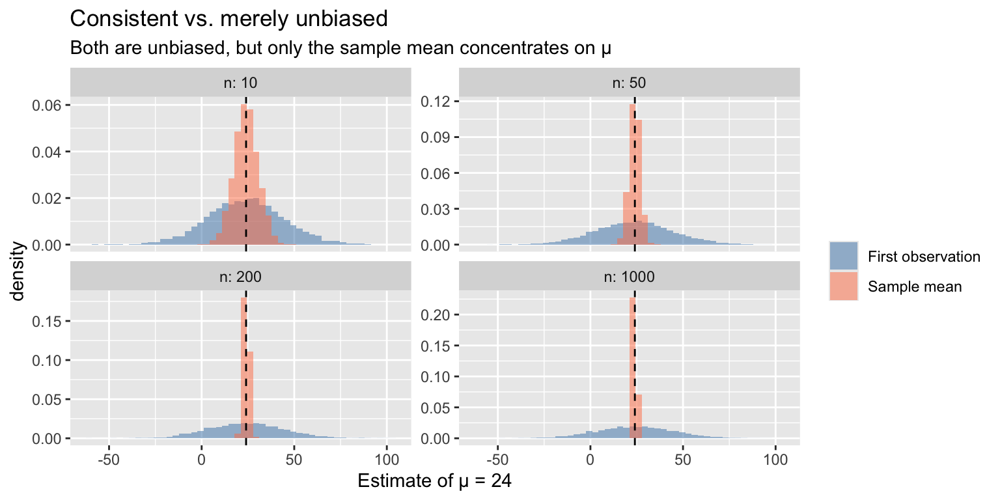
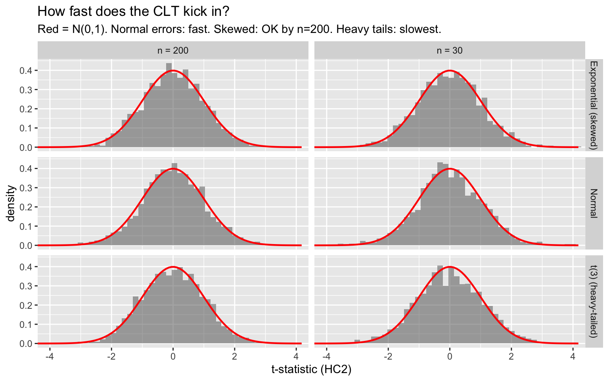

library(ggplot2)
library(sandwich)
library(lmtest)
library(estimatr)
library(car)
library(carData)
library(boot)
options(digits = 4)8. Asymptotics
Large-sample theory, the delta method, and the bootstrap
Chapters 5–7 used sandwich standard errors and asymptotic normality without fully justifying them. This chapter provides the justification — and then immediately asks: can we do better? The bootstrap offers a simulation-based alternative that avoids distributional assumptions and derivative calculations entirely. We develop both approaches side by side so you can see when they agree, when they diverge, and which to trust.
The chapter is organized around three practical questions:
- Why are my standard errors approximately right? (CLT, sandwich)
- How do I get SEs for nonlinear functions of parameters? (Delta method vs. bootstrap)
- How do I know my sample is large enough? (Coverage simulations, bootstrap diagnostics)
1 Consistency: what more data buys you
An estimator is consistent if it converges to the truth as the sample grows. Formally, \(\hat{\theta}_n \overset{p}{\to} \theta\) means \(P(|\hat{\theta}_n - \theta| > \varepsilon) \to 0\) for all \(\varepsilon > 0\).
Consistency is a stronger guarantee than unbiasedness. The “first observation” estimator \(\hat{\mu} = X_1\) is unbiased but useless — its variance never shrinks. The sample mean is both unbiased and consistent.
set.seed(42)
B <- 5000
df_list <- list()
for (n in c(10, 50, 200, 1000)) {
xbar <- replicate(B, mean(rnorm(n, mean = 24, sd = sqrt(430))))
x1 <- rnorm(B, mean = 24, sd = sqrt(430))
df_list[[length(df_list) + 1]] <- data.frame(
estimate = c(xbar, x1),
estimator = rep(c("Sample mean", "First observation"), each = B),
n = n
)
}
df_consist <- do.call(rbind, df_list)
ggplot(df_consist, aes(estimate, fill = estimator)) +
geom_histogram(aes(y = after_stat(density)), bins = 50, alpha = 0.5,
position = "identity") +
geom_vline(xintercept = 24, linetype = "dashed") +
facet_wrap(~ n, scales = "free_y", labeller = label_both) +
scale_fill_manual(values = c("steelblue", "coral")) +
labs(title = "Consistent vs. merely unbiased",
subtitle = "Both are unbiased, but only the sample mean concentrates on μ",
x = "Estimate of μ = 24", fill = NULL)
OLS is consistent for the projection coefficient \(\beta\) whenever \(E[X_i e_i] = 0\). The proof is short: OLS is a continuous function of sample moments (\(\hat{Q}_{XX}^{-1} \hat{Q}_{XY}\)), the WLLN says sample moments converge to population moments, and the continuous mapping theorem (CMT) says continuous functions preserve convergence. When \(E[Xe] \neq 0\) — endogeneity — OLS is inconsistent regardless of sample size. This motivates the IV estimator.
Theorem 1 (OLS Consistency) If \(\mathbb{E}[X_i e_i] = 0\) and \(Q_{XX} = \mathbb{E}[X_i X_i']\) is positive definite, then \(\hat\beta_{OLS} \xrightarrow{p} \beta\). OLS is a continuous function of sample moments; the WLLN and continuous mapping theorem deliver consistency.
NoteConsistency Requires \(\mathbb{E}[Xe] = 0\)
OLS is consistent if and only if regressors are uncorrelated with errors. When \(\mathbb{E}[Xe] \neq 0\) — from omitted variables, measurement error, or simultaneity — OLS converges to the wrong value no matter how large the sample. This is the fundamental motivation for IV estimation (Chapter 10).
set.seed(42)
B <- 3000
# Non-normal, skewed errors: OLS is still consistent
sim_ols <- function(n) {
x <- rnorm(n)
e <- rexp(n) - 1 # skewed, mean 0
y <- 2 + 3 * x + e
coef(lm(y ~ x))["x"]
}
df_ols <- rbind(
data.frame(b = replicate(B, sim_ols(20)), n = "n = 20"),
data.frame(b = replicate(B, sim_ols(200)), n = "n = 200"),
data.frame(b = replicate(B, sim_ols(2000)), n = "n = 2000")
)
ggplot(df_ols, aes(b)) +
geom_histogram(aes(y = after_stat(density)), bins = 50, alpha = 0.5) +
geom_vline(xintercept = 3, color = "blue", linewidth = 1) +
facet_wrap(~ n, scales = "free_y") +
labs(title = "OLS is consistent even with non-normal errors",
subtitle = "Errors ~ Exp(1) - 1 (skewed). True β = 3 (blue). Distribution concentrates as n grows.",
x = expression(hat(beta)))
2 The CLT and why standard errors work
The central limit theorem says that standardized sample means converge to a normal distribution, regardless of the underlying data distribution:
\[\sqrt{n}(\bar{X}_n - \mu) \overset{d}{\to} N(0, \sigma^2) \tag{1}\]
Applied to OLS, this gives:
\[\sqrt{n}(\hat{\beta} - \beta) \overset{d}{\to} N\!\left(0,\; Q_{XX}^{-1}\, \Omega\, Q_{XX}^{-1}\right) \tag{2}\]
Theorem 2 (Lindeberg-Levy CLT) If \(X_1, \ldots, X_n\) are iid with mean \(\mu\) and variance \(\sigma^2 < \infty\), then \(\sqrt{n}(\bar{X}_n - \mu) \xrightarrow{d} N(0, \sigma^2)\). Applied to OLS: \(\sqrt{n}(\hat\beta - \beta) \xrightarrow{d} N(0, Q_{XX}^{-1}\Omega Q_{XX}^{-1})\).
where \(\Omega = E[X_i X_i' e_i^2]\). This is the sandwich variance estimator, now justified by asymptotic theory. The convergence rate depends on the shape of the data — symmetric data need \(n \approx 30\), skewed data may need \(n \geq 100\), and heavy-tailed data may need much more.
set.seed(42)
B <- 2000
# How fast does the CLT kick in? Depends on the error distribution.
sim_tstat <- function(n, rdist_e) {
replicate(B, {
x <- rnorm(n)
e <- rdist_e(n)
y <- 2 + 3 * x + e
fit <- lm_robust(y ~ x, se_type = "HC2")
(coef(fit)["x"] - 3) / fit$std.error["x"]
})
}
df_clt <- rbind(
data.frame(t = sim_tstat(30, function(n) rnorm(n)),
n = "n = 30", errors = "Normal"),
data.frame(t = sim_tstat(30, function(n) rexp(n) - 1),
n = "n = 30", errors = "Exponential (skewed)"),
data.frame(t = sim_tstat(30, function(n) (rt(n, df = 3) / sqrt(3))),
n = "n = 30", errors = "t(3) (heavy-tailed)"),
data.frame(t = sim_tstat(200, function(n) rnorm(n)),
n = "n = 200", errors = "Normal"),
data.frame(t = sim_tstat(200, function(n) rexp(n) - 1),
n = "n = 200", errors = "Exponential (skewed)"),
data.frame(t = sim_tstat(200, function(n) (rt(n, df = 3) / sqrt(3))),
n = "n = 200", errors = "t(3) (heavy-tailed)")
)
ggplot(df_clt, aes(t)) +
geom_histogram(aes(y = after_stat(density)), bins = 50, alpha = 0.5) +
stat_function(fun = dnorm, color = "red", linewidth = 0.8) +
facet_grid(errors ~ n) +
coord_cartesian(xlim = c(-4, 4)) +
labs(title = "How fast does the CLT kick in?",
subtitle = "Red = N(0,1). Normal errors: fast. Skewed: OK by n=200. Heavy tails: slowest.",
x = "t-statistic (HC2)")
With normal errors, the CLT approximation is excellent even at \(n = 30\). With skewed errors (Exponential), it improves by \(n = 200\). With heavy-tailed errors (\(t_3\)), it remains imperfect even at \(n = 200\). This is why alternatives like the bootstrap matter.
3 The delta method
Often we care about a nonlinear function of the estimated parameters, not \(\hat{\beta}\) itself. The delta method uses a first-order Taylor expansion:
\[\sqrt{n}(h(\hat{\theta}) - h(\theta)) \overset{d}{\to} N(0, \; \nabla h' \, V \, \nabla h) \tag{3}\]
Theorem 3 (Delta Method) If \(\sqrt{n}(\hat\theta - \theta) \xrightarrow{d} N(0, V)\) and \(h\) is continuously differentiable with \(\nabla h(\theta) \neq 0\), then \(\sqrt{n}(h(\hat\theta) - h(\theta)) \xrightarrow{d} N(0, \nabla h' V \nabla h)\).
WarningDelta Method Fails at Boundaries
The delta method relies on a first-order Taylor expansion. It fails when \(\nabla h(\theta) = 0\) (e.g., testing \(h(\theta) = \theta^2\) at \(\theta = 0\)) or when the function is not differentiable. In such cases, the bootstrap (or higher-order expansions) is more reliable.
In practice: compute the gradient \(\nabla h\), sandwich it around the covariance matrix, take the square root. R’s car::deltaMethod() does this automatically.
3.1 Applied example: long-run elasticity
A model with a lagged dependent variable:
\[y_t = \beta_0 + \beta_1 x_t + \gamma y_{t-1} + \varepsilon_t\]
The short-run effect of \(x\) is \(\beta_1\). The long-run effect (after the dynamics play out) is:
\[\theta = \frac{\beta_1}{1 - \gamma}\]
This is a ratio of regression coefficients — the delta method gives its standard error.
set.seed(42)
n <- 200
beta0 <- 1; beta1 <- 0.5; gamma_true <- 0.7
y <- numeric(n)
x <- rnorm(n)
y[1] <- rnorm(1)
for (t in 2:n) {
y[t] <- beta0 + beta1 * x[t] + gamma_true * y[t - 1] + rnorm(1, sd = 0.5)
}
dta <- data.frame(y = y[-1], x = x[-1], y_lag = y[-n])
fit_dyn <- lm(y ~ x + y_lag, data = dta)
# Delta method (car package)
deltaMethod(fit_dyn, "x / (1 - y_lag)") Estimate SE 2.5 % 97.5 %
x/(1 - y_lag) 1.332 0.177 0.985 1.68The true long-run effect is \(0.5/(1 - 0.7) = 1.67\).
3.2 Delta method by hand
Under the hood, deltaMethod() computes the gradient vector and applies \(\text{SE} = \sqrt{\nabla h' \hat{V} \nabla h}\):
b <- coef(fit_dyn)
# Gradient of h(beta) = beta1 / (1 - gamma) w.r.t. (intercept, x, y_lag)
grad <- c(0,
1 / (1 - b["y_lag"]),
b["x"] / (1 - b["y_lag"])^2)
se_delta <- as.numeric(sqrt(t(grad) %*% vcov(fit_dyn) %*% grad))
lr_hat <- b["x"] / (1 - b["y_lag"])
c(estimate = lr_hat, se = se_delta,
ci_lo = lr_hat - 1.96 * se_delta, ci_hi = lr_hat + 1.96 * se_delta)estimate.x se ci_lo.x ci_hi.x
1.3318 0.1768 0.9853 1.6783 The delta method requires computing derivatives. For simple functions this is fine; for complicated transformations it becomes tedious. The bootstrap avoids derivatives entirely.
4 The bootstrap
The bootstrap (Efron, 1979) replaces analytical derivations with simulation. The idea: if the sample is a good stand-in for the population, then resampling from the sample mimics sampling from the population. The variation across resamples estimates sampling variability.
4.1 Nonparametric bootstrap for OLS
The pairs bootstrap resamples rows \((Y_i, X_i)\) with replacement, re-estimates OLS on each resample, and uses the distribution of \(\hat{\beta}^*\) across resamples to estimate the sampling distribution:
data(Prestige)
mod <- lm(prestige ~ income + education + women, data = Prestige)
# Bootstrap by hand
set.seed(42)
B <- 5000
n <- nrow(Prestige)
boot_coefs <- matrix(NA, B, length(coef(mod)))
for (b in 1:B) {
idx <- sample(n, n, replace = TRUE)
boot_coefs[b, ] <- coef(lm(prestige ~ income + education + women,
data = Prestige[idx, ]))
}
colnames(boot_coefs) <- names(coef(mod))# Compare bootstrap SEs to classical and sandwich SEs
se_classical <- sqrt(diag(vcov(mod)))
se_hc2 <- sqrt(diag(vcovHC(mod, type = "HC2")))
se_boot <- apply(boot_coefs, 2, sd)
data.frame(
Variable = names(coef(mod)),
Classical = round(se_classical, 4),
HC2 = round(se_hc2, 4),
Bootstrap = round(se_boot, 4)
) Variable Classical HC2 Bootstrap
(Intercept) (Intercept) 3.2391 3.2167 3.2067
income income 0.0003 0.0004 0.0004
education education 0.3887 0.4469 0.4759
women women 0.0304 0.0355 0.0369The bootstrap SEs are close to the sandwich (HC2) SEs — both account for heteroskedasticity without assuming a specific form. The classical SEs assume homoskedasticity, which may be wrong.
4.2 Visualizing the bootstrap distribution
df_boot <- data.frame(
income = boot_coefs[, "income"],
education = boot_coefs[, "education"]
)
ggplot(df_boot, aes(income)) +
geom_histogram(aes(y = after_stat(density)), bins = 50, alpha = 0.5) +
geom_vline(xintercept = coef(mod)["income"], color = "blue", linewidth = 1) +
stat_function(fun = dnorm,
args = list(mean = coef(mod)["income"], sd = se_hc2["income"]),
color = "red", linewidth = 0.8) +
labs(title = "Bootstrap distribution of income coefficient",
subtitle = "Blue = point estimate, Red = normal approximation (sandwich SE)",
x = expression(hat(beta)[income]^"*"))
4.3 Using the boot package
# The boot package standardizes this workflow
boot_fn <- function(data, indices) {
d <- data[indices, ]
coef(lm(prestige ~ income + education + women, data = d))
}
boot_out <- boot(Prestige, boot_fn, R = 5000)
boot_out
ORDINARY NONPARAMETRIC BOOTSTRAP
Call:
boot(data = Prestige, statistic = boot_fn, R = 5000)
Bootstrap Statistics :
original bias std. error
t1* -6.794334 0.0571783 3.2173023
t2* 0.001314 0.0001055 0.0004326
t3* 4.186637 -0.0831645 0.4685039
t4* -0.008905 0.0055652 0.0366501# Bootstrap confidence intervals for education coefficient
boot.ci(boot_out, index = 3, type = c("norm", "perc", "bca"))BOOTSTRAP CONFIDENCE INTERVAL CALCULATIONS
Based on 5000 bootstrap replicates
CALL :
boot.ci(boot.out = boot_out, type = c("norm", "perc", "bca"),
index = 3)
Intervals :
Level Normal Percentile BCa
95% ( 3.352, 5.188 ) ( 3.043, 4.935 ) ( 3.261, 5.020 )
Calculations and Intervals on Original ScaleThe boot.ci function provides three types of intervals:
- Normal: \(\hat{\theta} \pm z_{0.025} \cdot \text{SE}_{\text{boot}}\) (same logic as asymptotic, just uses bootstrap SE)
- Percentile: the 2.5th and 97.5th percentiles of \(\hat{\theta}^*\) (no normal assumption)
- BCa (bias-corrected, accelerated): adjusts for bias and skewness in the bootstrap distribution (generally preferred)
5 Delta method vs. bootstrap: a direct comparison
For the long-run elasticity \(\theta = \beta_1/(1 - \gamma)\), we can compare three approaches:
set.seed(42)
B <- 5000
# Bootstrap the long-run effect
boot_lr <- replicate(B, {
idx <- sample(nrow(dta), nrow(dta), replace = TRUE)
b_star <- coef(lm(y ~ x + y_lag, data = dta[idx, ]))
b_star["x"] / (1 - b_star["y_lag"])
})
# Delta method (from above)
dm <- deltaMethod(fit_dyn, "x / (1 - y_lag)")
data.frame(
Method = c("Delta method", "Bootstrap"),
Estimate = c(dm$Estimate, mean(boot_lr)),
SE = c(dm$SE, sd(boot_lr)),
CI_lo = c(dm$`2.5 %`, quantile(boot_lr, 0.025)),
CI_hi = c(dm$`97.5 %`, quantile(boot_lr, 0.975))
) Method Estimate SE CI_lo CI_hi
Delta method 1.332 0.1768 0.9853 1.678
2.5% Bootstrap 1.350 0.1881 1.0229 1.756df_lr <- data.frame(lr = boot_lr)
ggplot(df_lr, aes(lr)) +
geom_histogram(aes(y = after_stat(density)), bins = 60, alpha = 0.5) +
stat_function(fun = dnorm,
args = list(mean = dm$Estimate, sd = dm$SE),
color = "red", linewidth = 1) +
geom_vline(xintercept = 0.5 / (1 - 0.7), linetype = "dashed") +
labs(title = "Bootstrap vs. delta method for long-run elasticity",
subtitle = "Red = normal approximation (delta method). Dashed = true value 1.67.",
x = expression(hat(beta)[x] / (1 - hat(gamma))))
When the bootstrap distribution is close to normal, the two approaches agree. When it is skewed (common for ratios, especially when the denominator can be near zero), the bootstrap percentile interval is more reliable.
6 When does each approach work?
6.1 Coverage simulation
The acid test for any inference method: does a nominal 95% interval actually contain the true parameter 95% of the time?
set.seed(42)
B <- 500
n_vals <- c(20, 50, 200)
B_boot <- 200 # bootstrap replicates per simulation
results <- list()
for (n in n_vals) {
cover_analytic <- cover_sandwich <- cover_boot <- logical(B)
for (b in 1:B) {
x <- rnorm(n)
sigma_i <- 0.5 + abs(x)
e <- rt(n, df = 3) / sqrt(3) * sigma_i # heavy-tailed + heteroskedastic
y <- 2 + 3 * x + e
dat <- data.frame(y = y, x = x)
fit <- lm(y ~ x, data = dat)
# Analytic (classical)
ci_a <- confint(fit)["x", ]
cover_analytic[b] <- ci_a[1] < 3 & 3 < ci_a[2]
# Sandwich (HC2)
fit_r <- lm_robust(y ~ x, data = dat, se_type = "HC2")
ci_s <- c(fit_r$conf.low["x"], fit_r$conf.high["x"])
cover_sandwich[b] <- ci_s[1] < 3 & 3 < ci_s[2]
# Bootstrap (percentile)
boot_b <- replicate(B_boot, {
idx <- sample(n, n, replace = TRUE)
coef(lm(y ~ x, data = dat[idx, ]))["x"]
})
ci_boot <- quantile(boot_b, c(0.025, 0.975))
cover_boot[b] <- ci_boot[1] < 3 & 3 < ci_boot[2]
}
results[[length(results) + 1]] <- data.frame(
n = n,
Classical = mean(cover_analytic),
HC2 = mean(cover_sandwich),
Bootstrap = mean(cover_boot)
)
}
do.call(rbind, results) n Classical HC2 Bootstrap
1 20 0.862 0.914 0.892
2 50 0.838 0.958 0.932
3 200 0.776 0.928 0.906Key patterns:
- Classical SEs undercover when errors are heteroskedastic (they assume homoskedasticity)
- HC2 sandwich SEs do well once \(n\) is moderate, but can undercover with very small \(n\) and heavy tails
- Bootstrap tends to be robust across scenarios, especially with small \(n\)
6.2 When the bootstrap breaks down
The bootstrap is not a panacea. It fails or becomes unreliable when:
- The data are not iid (time series, clustered data) — you need a block bootstrap or cluster bootstrap instead
- The estimator is not smooth (e.g., the maximum of the data) — the bootstrap distribution can be inconsistent
- The sample is very small (\(n < 20\)) — there aren’t enough distinct resamples to represent the population
# Bootstrap fails for the sample maximum (non-smooth estimator)
set.seed(42)
B <- 5000
n <- 50
true_max <- 1 # support of Uniform[0,1]
boot_max <- replicate(B, {
x <- runif(n)
x_star <- sample(x, n, replace = TRUE)
max(x_star)
})
df_max <- data.frame(max_star = boot_max)
ggplot(df_max, aes(max_star)) +
geom_histogram(bins = 50, alpha = 0.5) +
geom_vline(xintercept = true_max, linetype = "dashed", color = "red") +
labs(title = "Bootstrap failure: sample maximum of Uniform[0,1]",
subtitle = "The bootstrap cannot exceed the sample max, so it cannot cover the true max = 1.",
x = expression(max(X^"*")))
The bootstrap distribution of the sample maximum is bounded by the observed maximum — it can never reach the true parameter boundary. For smooth functions of sample means (like regression coefficients), this pathology does not arise.
7 Applied workflow: Prestige data
Let’s put everything together on a real example, comparing all approaches.
mod <- lm(prestige ~ income + education + women, data = Prestige)7.1 Standard errors: three ways
# 1. Classical (assumes homoskedasticity + normality)
se_class <- sqrt(diag(vcov(mod)))
# 2. Sandwich (asymptotic, no distributional assumptions)
se_hc2 <- sqrt(diag(vcovHC(mod, type = "HC2")))
# 3. Bootstrap
set.seed(42)
boot_out <- boot(Prestige,
function(d, i) coef(lm(prestige ~ income + education + women, data = d[i, ])),
R = 5000)
se_boot <- apply(boot_out$t, 2, sd)
data.frame(
Variable = names(coef(mod)),
Estimate = round(coef(mod), 4),
SE_classical = round(se_class, 4),
SE_HC2 = round(se_hc2, 4),
SE_bootstrap = round(se_boot, 4)
) Variable Estimate SE_classical SE_HC2 SE_bootstrap
(Intercept) (Intercept) -6.7943 3.2391 3.2167 3.1653
income income 0.0013 0.0003 0.0004 0.0004
education education 4.1866 0.3887 0.4469 0.4724
women women -0.0089 0.0304 0.0355 0.03727.2 Confidence intervals: three ways
# Focus on the education coefficient (index 3)
ci_class <- confint(mod)["education", ]
ci_hc2 <- coefci(mod, vcov = vcovHC(mod, type = "HC2"))["education", ]
ci_boot <- boot.ci(boot_out, index = 3, type = "perc")$percent[4:5]
data.frame(
Method = c("Classical", "HC2 sandwich", "Bootstrap percentile"),
Lower = round(c(ci_class[1], ci_hc2[1], ci_boot[1]), 3),
Upper = round(c(ci_class[2], ci_hc2[2], ci_boot[2]), 3),
Width = round(c(diff(ci_class), diff(ci_hc2), diff(ci_boot)), 3)
) Method Lower Upper Width
1 Classical 3.415 4.958 1.543
2 HC2 sandwich 3.300 5.073 1.774
3 Bootstrap percentile 3.025 4.881 1.8567.3 Nonlinear function: income-to-education ratio
Suppose we want to compare the magnitude of the income and education effects. The ratio \(\theta = \beta_{\text{income}} / \beta_{\text{education}}\) tells us how many prestige points a unit of income buys relative to a year of education.
# Delta method
dm_ratio <- deltaMethod(mod, "income / education")
dm_ratio Estimate SE 2.5 % 97.5 %
income/education 3.14e-04 8.87e-05 1.40e-04 0# Bootstrap
boot_ratio <- boot_out$t[, 2] / boot_out$t[, 3] # income / education
c(delta_method_se = dm_ratio$SE,
bootstrap_se = sd(boot_ratio))delta_method_se bootstrap_se
8.866e-05 1.747e-04 df_ratio <- data.frame(ratio = boot_ratio)
ggplot(df_ratio, aes(ratio)) +
geom_histogram(aes(y = after_stat(density)), bins = 50, alpha = 0.5) +
stat_function(fun = dnorm,
args = list(mean = dm_ratio$Estimate, sd = dm_ratio$SE),
color = "red", linewidth = 1) +
geom_vline(xintercept = dm_ratio$Estimate, linetype = "dashed") +
labs(title = "Bootstrap vs. delta method for β_income / β_education",
subtitle = "Red = normal approximation (delta method). Bootstrap is slightly skewed.",
x = expression(hat(beta)[income] / hat(beta)[education]))
7.4 Wald test with robust and bootstrap covariance
# Classical F-test
linearHypothesis(mod, c("education = 0", "women = 0"))
Linear hypothesis test:
education = 0
women = 0
Model 1: restricted model
Model 2: prestige ~ income + education + women
Res.Df RSS Df Sum of Sq F Pr(>F)
1 100 14616
2 98 6034 2 8583 69.7 <2e-16 ***
---
Signif. codes: 0 '***' 0.001 '**' 0.01 '*' 0.05 '.' 0.1 ' ' 1# Robust Wald test (sandwich)
linearHypothesis(mod, c("education = 0", "women = 0"),
vcov = vcovHC(mod, type = "HC2"), test = "Chisq")
Linear hypothesis test:
education = 0
women = 0
Model 1: restricted model
Model 2: prestige ~ income + education + women
Note: Coefficient covariance matrix supplied.
Res.Df Df Chisq Pr(>Chisq)
1 100
2 98 2 118 <2e-16 ***
---
Signif. codes: 0 '***' 0.001 '**' 0.01 '*' 0.05 '.' 0.1 ' ' 18 The asymptotic toolkit in one picture
Every estimator in this course follows the same pattern:
| Step | Tool | What it does |
|---|---|---|
| 1. Consistency | WLLN + CMT | Sample moments → population moments; \(\hat{\theta} \overset{p}{\to} \theta\) |
| 2. Asymptotic normality | CLT + Slutsky | \(\sqrt{n}(\hat{\theta} - \theta) \overset{d}{\to} N(0, V)\) |
| 3. Variance estimation | Sandwich | \(\hat{V} \overset{p}{\to} V\) (robust to misspecification) |
| 4. Nonlinear functions | Delta method or bootstrap | SEs for \(h(\hat{\theta})\) |
This applies identically to OLS, probit MLE (Chapter 7), IV (Chapter 10), and GMM (Chapter 11) — only the moment condition changes:
| Estimator | Moment condition |
|---|---|
| OLS | \(E[X_i(Y_i - X_i'\beta)] = 0\) |
| Probit MLE | \(E[s_i(\beta)] = 0\) (score) |
| IV | \(E[Z_i(Y_i - X_i'\beta)] = 0\) |
| GMM | \(E[g(W_i, \theta)] = 0\) (general) |
9 Summary
| Method | How it works | Advantages | Limitations |
|---|---|---|---|
| Classical SE | Assumes \(e \sim N(0, \sigma^2)\) | Exact under normality | Wrong under heteroskedasticity |
| Sandwich (HC2) | Estimates \(E[X_i X_i' e_i^2]\) | No distributional assumptions | Needs moderate \(n\) |
| Delta method | Taylor expansion of \(h(\hat{\beta})\) | Fast, analytical | Requires derivatives; assumes normality of \(h(\hat{\beta})\) |
| Bootstrap | Resample rows, re-estimate | No derivatives; captures skewness | Needs iid; slow; fails for non-smooth estimators |
| Task | R code |
|---|---|
| Sandwich SEs | vcovHC(mod, type = "HC2") or lm_robust(..., se_type = "HC2") |
| Delta method | car::deltaMethod(mod, "expression") |
| Bootstrap SEs | boot(data, statistic, R = 5000) |
| Bootstrap CIs | boot.ci(boot_out, type = "perc") or type = "bca" |
| Robust Wald test | linearHypothesis(mod, ..., vcov = vcovHC, test = "Chisq") |
Key takeaways.
- The CLT justifies using normal-based inference for OLS, probit, IV, and GMM — but convergence speed depends on the error distribution. Heavy tails and small samples require caution.
- The sandwich SE and the bootstrap SE are both robust to heteroskedasticity. They usually agree for linear models with moderate \(n\).
- The delta method and the bootstrap both handle nonlinear functions. Use the delta method when you can compute derivatives easily; use the bootstrap when the function is complicated or the normal approximation is suspect.
- When in doubt about whether \(n\) is “large enough,” compare all three approaches. If they disagree substantially, trust the bootstrap percentile or BCa interval.